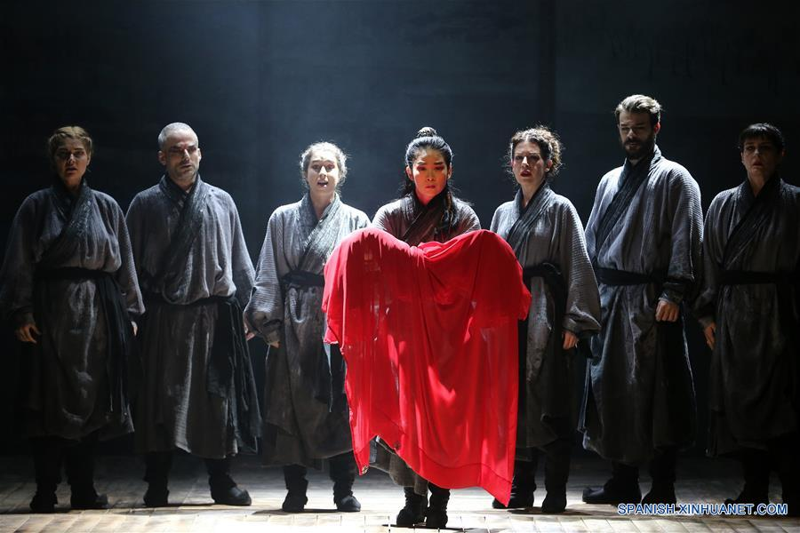

El Huérfano de los Zhao
Autor: Ji Juxiang
El clan Zhao al completo es exterminado en una matanza. La propia reina trae a su vientre un Zhao (Zhao Wu) y, el mismo día de la masacre, da a luz. Cheng Ying, un médico-sanador, lo asiste en el parto y sacrifica su propio hijo acabado de nacer para salvar el último miembro de la dinastía. Cuando se hace grande, Zhao Wu, con la ayuda del doctor, busca vengarse de la familia rival y de los asesinos y descubre la implacable verdad de su infancia, emprendiendo un épico viaje de sacrificio y venganza.
Leer más 03/12/2021 Barcelona
M4.258